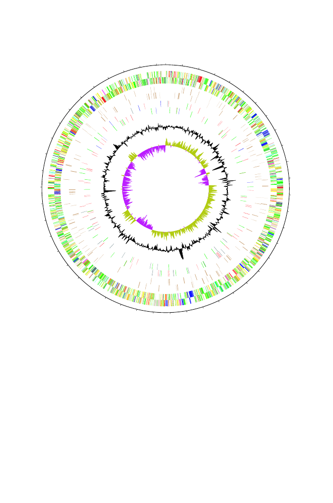

0
1
2
3
4
Yersinia pestis
4,653,728 bp
Fig. 14.3.
[This figure also appears in the color insert.] Properties of the
Yersinia
pestis
genome. Numbers on the outer circle denote coordinates in millions of bp
clockwise of the map origin at 0. Two bands of short radial lines just inside the
coordinate circle represent the genes on the two DNA strands. Dark blue lines denote
genes related to pathogenicity and adaptation. The innermost circle represents
GC
skew, and the next one out (black) depicts variations in base composition relative to
the mean. Reprinted, with permission, from Parkhill J et al. (2003)
Nature
413:523–
527. Copyright 2003 Nature Publishing Group.